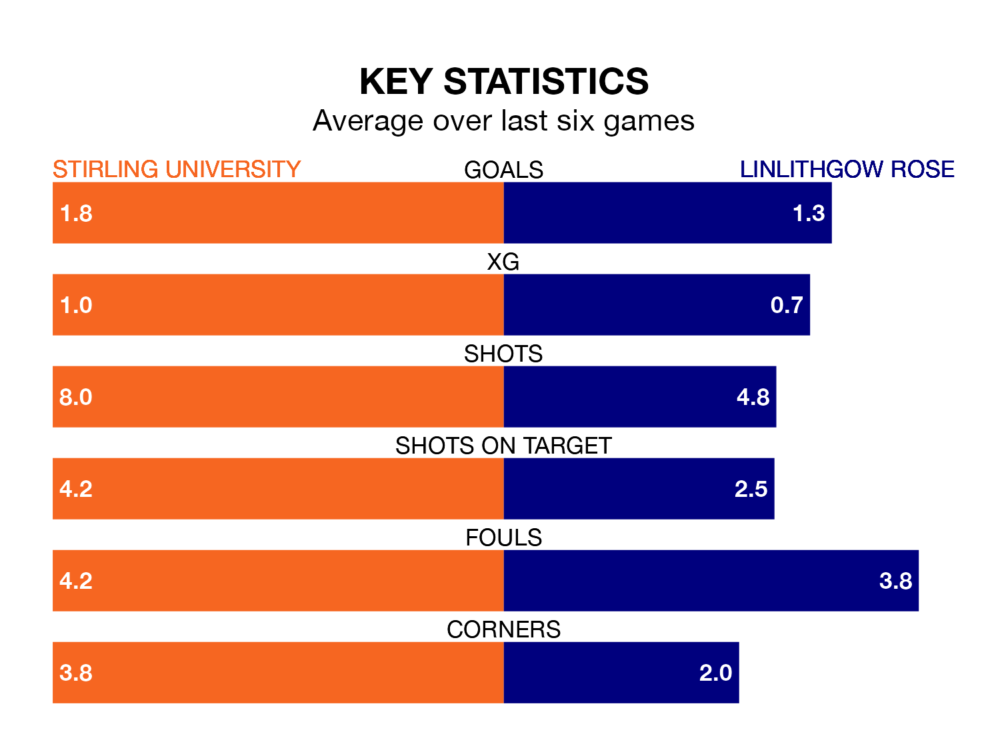

Linlithgow Rose travel to Stirling University on Saturday in the Lowland Football League.
The visitors come into the game on the back of a defeat in their last match, having lost to Albion Rovers 3-0 away.
Stirling University also lost their last match, 2-0 against Berwick Rangers.
With 46 goals in 23 games so far this season, Linlithgow Rose are scoring more than average in the league with 2.0 goals per game. And they are conceding fewer than average, letting in 27 goals at a rate of 1.2 per game.
Stirling University, meanwhile, are below average scorers, with 1.5 goals per game, compared to a league average of 1.7. They have conceded 1.4 goals per game.
The visitors are seventh in the table after 23 games, of which they have won 10 and drawn eight, earning 38 points.
The home team are two places behind Linlithgow Rose in ninth, with 11 wins and four draws putting them on 37 points.
Stirling University are in mixed form in the Lowland Football League, with three wins and a draw from their last six games.
With two wins and three draws over that period, Linlithgow Rose's form is slightly worse – they have taken nine points from 18, compared to Stirling University's 10.
Updated: 13:04 (UTC), 16/02/24